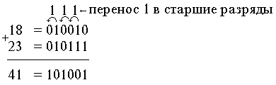
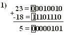
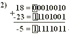

Арифметические основы цифровых устройств
При выполнении различных операций в современных цифровых устройствах и системах числа обычно представляются в двоичной системе счисления. Это связано с тем, что для представления смысла символов цифр двоичной системы счисления можно использовать простые электронные схемы с двумя электрическими состояниями. Принято, что символ “1” представляется некоторым стандартным уровнем напряжения или тока, а “0” - нулевым или близким к нулю уровнем напряжения или тока.
Арифметические операции над двоичными числами могут производиться по тем же правилам, что и над десятичными, однако, с целью упрощения цифровых систем для выполнения арифметических операций применяют алгоритмы, отличные от алгоритмов действий десятичной арифметики.
В двоичной системе счисления для представления знака числа используется дополнительный знаковый разряд (один или несколько разрядов), который располагается перед старшим числовым разрядом. Для положительных чисел значение знакового разряда равно 0, для отрицательного числа - 1.
Операция вычитания в цифровых системах реализуется с помощью операции сложения. Вычитаемое при этом представляется в дополнительном коде (если расчет не требует высокой точности - в обратном коде).
Двоичный код со знаком называют также прямым кодом. В качестве примера рассмотрим положительное и отрицательное числа, десятичный эквивалент которых равен 4610:
00101110 - код положительного числа;
10101110 - код отрицательного числа.
Обратный код получается путем замены всех “0” на “1” и всех “1” на “0” прямого кода (двоичного числа со знаком). Причем, знаковый разряд при этом остается неизменным.
10101110 - прямой код отрицательного числа 4610;
11010001 - обратный код отрицательного числа 4610.
Замена “0” на единицу (“1”) называется инвертированием (также и замена “1” на “0”).
Обратный код, дополненный единицей в младшем разряде, называется дополнительным кодом. Последовательность действий при получении дополнительного кода:
- 10101110 - прямой код;
- инвертирование всех разрядов кроме знакового;
- 11010001 - обратный код
- прибавляем 1 к младшему заряду;
- 11010010 - дополнительный код.
Сложение и вычитание двоичных чисел
Правила сложения двух двоичных чисел можно показать на следующем примере:
0 + 0 = 0
0 + 1 = 1
1 + 0 = 1
1 + 1 = 0 и 1 переносится в старший разряд.
Пример. Требуется сложить два числа 1810 и 2310

Вычитание в цифровых устройствах производится также как и сложение, только вычитающее представляется в дополнительном коде.
Рассмотрим два примера, в первом требуется из числа 23 отнять число 18, а во втором из 18 отнять 23. С начала вычитающие представим в дополнительном коде:
11101110 - дополнительный код числа -18;
11101001 - дополнительный код числа -23.
Тогда


Результат - отрицательное число, следовательно, требуется перевести в прямой код.
Перевод отрицательного дополнительного кода в отрицательный прямой код осуществляется также, как и перевод в дополнительный код прямого кода. Тогда
10000100 - после инвертирования результата;
10000101 - после добавления 1.
В результате полученное число соответствует числу минус пять (-5).
Принято считать, что дополнительный код положительного числа совпадает с его прямым кодом.
Операция вычитания с использованием только обратного кода (без дополнительных операций по переводу его в дополнительный код) приводит к ошибке, определяемой единицей в младшем разряде, и поэтому при точных расчетах не применяется.